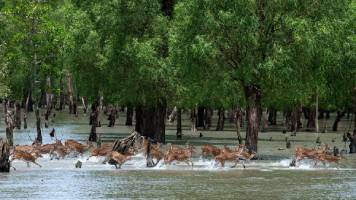

About Sundarban

The Sundarbans mangrove forest, one of the largest such forests in the world (140,000 ha), lies on the delta of the Ganges, Brahmaputra and Meghna rivers on the Bay of Bengal.
It is adjacent to the border of India’s Sundarbans World Heritage site inscribed in 1987. The site is intersected by a complex network of tidal waterways, mudflats and small islands of salt-tolerant mangrove forests, and presents an excellent example of ongoing ecological processes. The area is known for its wide range of fauna, including 260 bird species, the Bengal tiger and other threatened species such as the estuarine crocodile and the Indian python
Why should you visit The Sundarban:
- Unique ecosystem and biodiversity: Sundarbans is the largest mangrove forest in the world, home to endangered Royal Bengal Tigers and a wide range of wildlife.
- Scenic landscapes: Experience the beauty of intricate waterways, dense mangrove forests, and captivating sunsets while cruising through the Sundarbans.
- Cultural and historical significance: Explore the cultural heritage of indigenous communities and visit historical sites like Netidhopani and Hiron Point for a glimpse into the region's past.
learn More
Visit our Facebook Pages
Explore our youtube Channel.